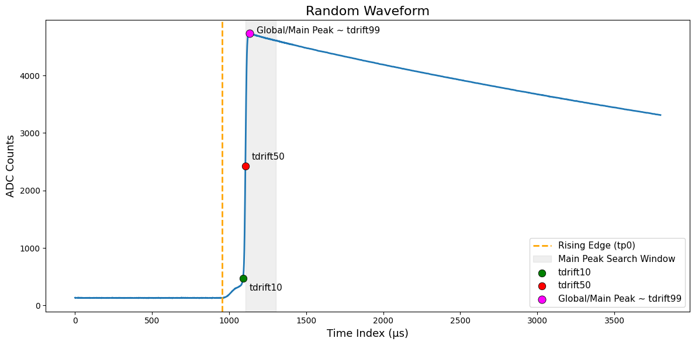
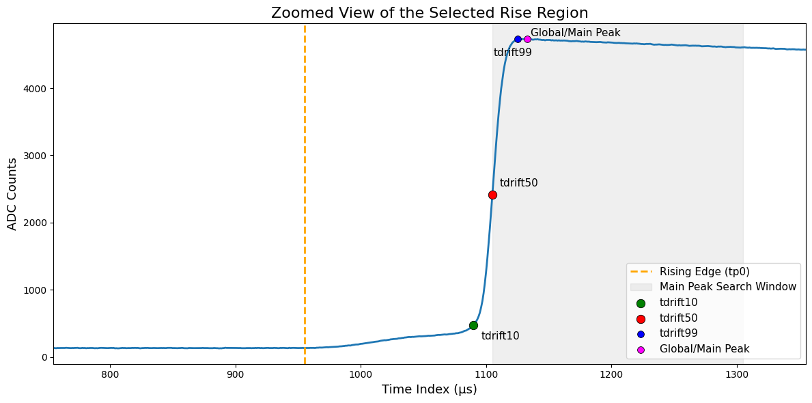
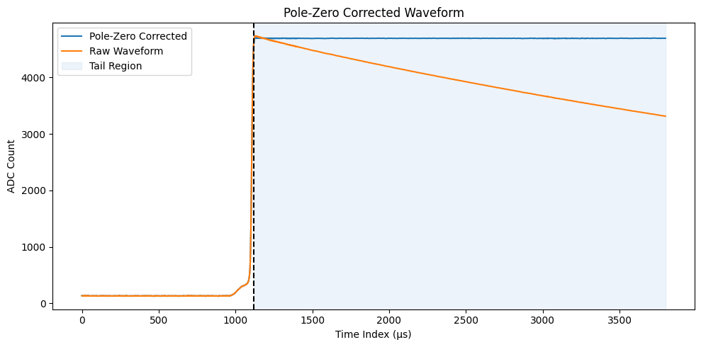
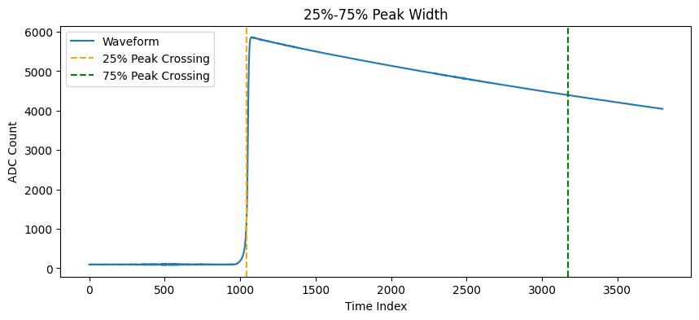
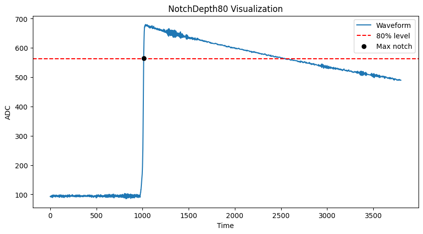
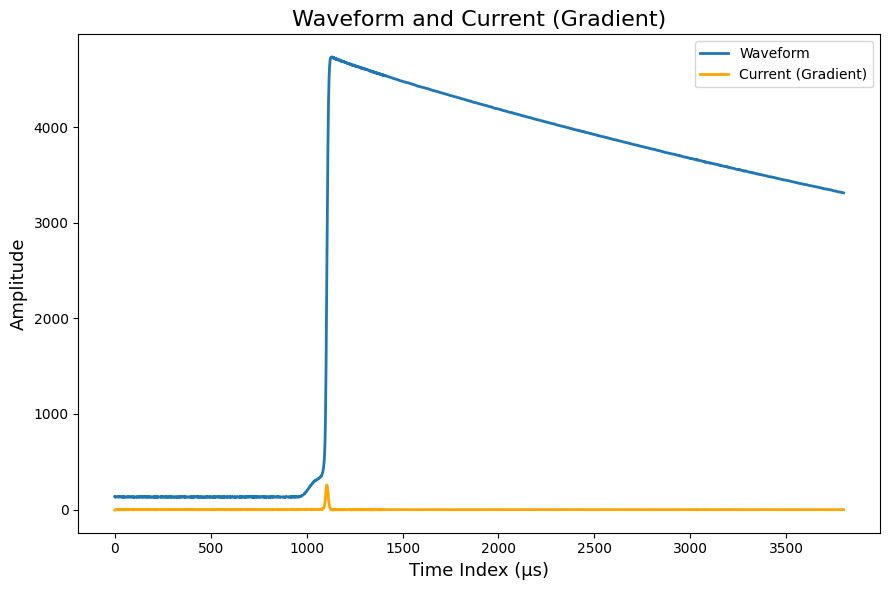
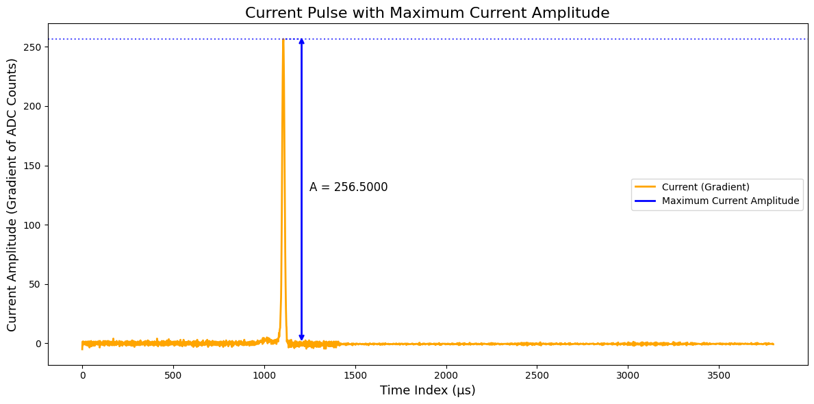
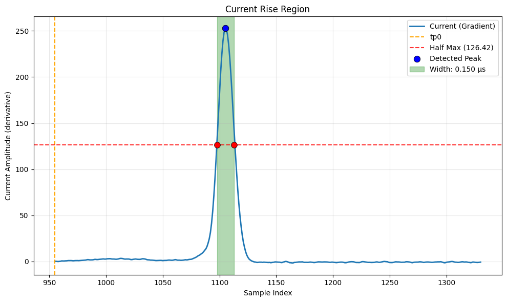
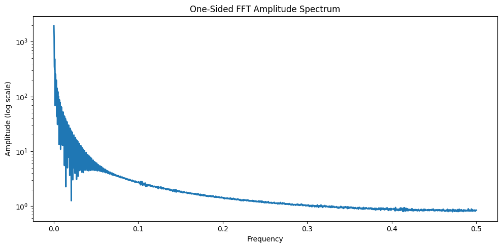
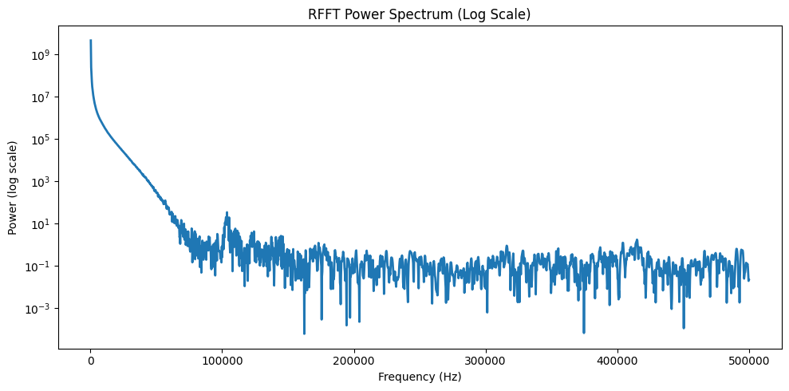

Time-Domain Features
Metrics derived from the temporal structure of the waveform's rising edge and drift.
Estimated start time of the waveform rising edge.
Energy duration measuring time required to accumulate 90% of signal energy.
Peak width between 25% and 75% amplitude levels.
Ratio of maximum slope (A) to total energy (E).
Drift time to 10% of peak amplitude.
Drift time to 50% of peak amplitude.
Drift time to 99% of peak amplitude.
Time difference between tp0 and maximum amplitude.
Time from tp0 to main pulse peak after max slope.


Tail Features
Characteristics of the waveform's decay region after the main pulse peak.
Slope of deep tail region normalized by energy.
Late charge area difference starting at 80% rising edge.
Notch depth below 80% amplitude prior to peak.
Tail Flattening Ratio comparing raw and pole-zero corrected tail.
Peak Plateau Ratio measuring late waveform flattening.



Gradient Features
Statistics extracted from the derivative of the waveform, capturing shape complexity.
Number of significant local maxima in waveform gradient.
Gradient baseline noise RMS in pre-pulse region.
Skewness of current waveform during rise.
Kurtosis of current waveform during rise.
Full Width at Half Maximum of current pulse.
Ratio of gradient area reflecting waveform geometry.
Width of main gradient peak region.



Frequency-Domain Features
Spectral properties extracted via Fourier analysis of the waveform signal.
Spectral centroid computed from amplitude spectrum.
Spectral centroid computed from power spectrum.
Log-transformed total power of frequency spectrum.
High-Frequency Energy Ratio.
Band Power Ratio comparing high and low frequency energy.

